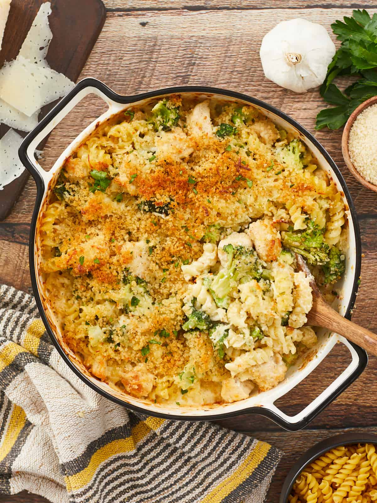

Chicken Alfredo Bake

Transform stovetop Chicken Alfredo into a delicious, decadent
casserole with this easy Chicken Alfredo Bake recipe!
Ingredients
Parmesan Chicken:
- 2 boneless, skinless chicken breasts (about 1 1/3 lbs. total)
- 2 Tbsp olive oil, divided
- 1 Tbsp grated Parmesan cheese
- 1/2 tsp Italian seasoning
- 1/2 tsp red pepper flakes
- 1/2 tsp salt
- 1/2 tsp black pepper
- 3 Tbsp water
Buttered Breadcrumbs:
- 2 Tbsp butter
- 1/2 cup panko breadcrumbs
- 1/4 tsp Italian seasoning
- 1/4 tsp garlic powder
- 1/4 tsp red pepper flakes
- 1/4 tsp salt
- 1/4 tsp black pepper
Alfredo Sauce/Pasta Bake:
- 4 Tbsp butter
- 4 cloves garlic, minced
- 2 cups heavy cream
- 2 cups Italian shredded cheese blend, divided
- 1/4 tsp Italian seasoning
- 1/4 tsp garlic powder
- 1/4 tsp red pepper flakes
- 1/4 tsp salt
- 1/4 tsp black pepper
- 8 oz. rotini, uncooked
- 10 oz. frozen broccoli florets
Instructions
Parmesan Chicken:
- Cut the chicken breasts into 1” chunks. Coat the chicken with 1 tablespoons of oil and season it with the grated Parmesan cheese, Italian seasoning, garlic powder, red pepper flakes, salt, and black pepper.
- Heat 1 tablespoons of oil in a large skillet over medium heat. Sear the chicken until the bottom of each piece is brown and the sides start to turn white (about 5 minutes).
- Add 3 tablespoons of water to the pan, releasing the chicken pieces from the bottom of the skillet, and flip each one. Continue cooking until the chicken is evenly browned on all sides and fully cooked in the center (about 5 minutes). Remove the chicken from the skillet, leaving behind any stuck-on bits of chicken to flavor the alfredo sauce.
Buttered Breadcrumbs:
- Melt the butter in a small skillet over medium heat. Once the butter has completely melted, stir in the panko breadcrumbs, Italian seasoning, garlic powder, red pepper flakes, salt, and black pepper.
- Toast the breadcrumbs, stirring occasionally, until all the butter is absorbed and the breadcrumbs are toasted and golden but not brown (about 5 minutes).
- Transfer the breadcrumbs to a bowl to stop the cooking process and set them aside to cool.
Alfredo Sauce:
- Melt the butter over medium heat in the same large skillet used to cook the chicken (without wiping it out). Add the minced garlic and sauté until fragrant (about 2 minutes).
- Whisk in the heavy cream, Italian seasoning, garlic powder, red pepper flakes, salt, and black pepper. Let it come up to a boil, stirring occasionally (about 5 minutes).
- Turn the heat down to low, and add 1.5 cups of shredded cheese a handful at a time, whisking until the cheese is fully melted before adding more (about 5 minutes). The alfredo sauce will continue to thicken as it cools.
Assembly:
- Preheat the oven to 375℉. Thaw the frozen broccoli in a colander, breaking down any large florets into bite-size pieces. Set aside.
- At the same time, boil a large pot of water on high heat. Once the water is rapidly boiling, add the rotini and cook until it is just tender (about 7 minutes). Do not overcook the pasta, as it will soften further in the oven. Drain the pasta in a colander and set aside.
- Mix together the cooked chicken, cooked pasta, thawed broccoli, and alfredo sauce in a casserole dish. Top the casserole with ½ cup of shredded cheese and the toasted breadcrumbs.
- Bake the casserole until all the cheese is melted and the breadcrumbs are golden brown (about 25-30 minutes).